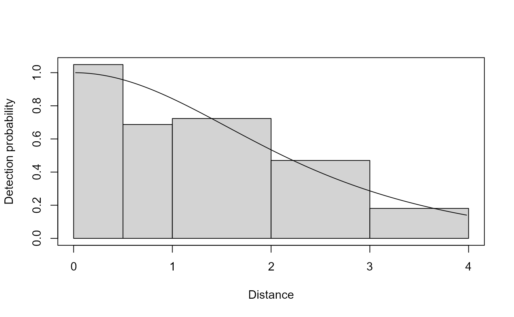
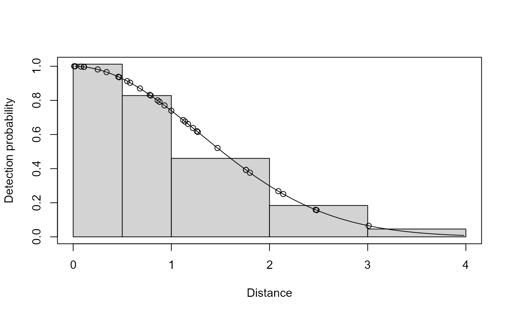
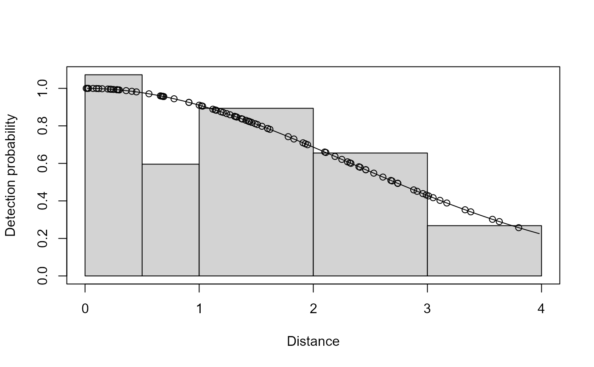
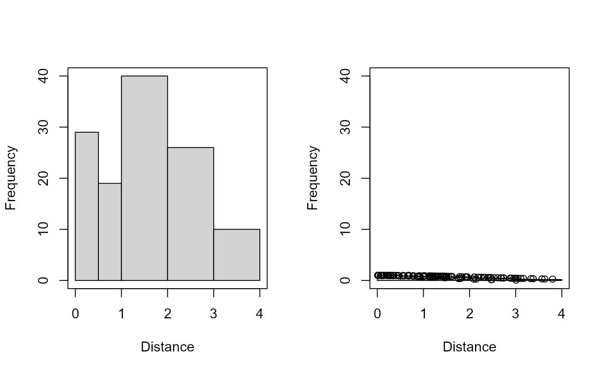

Plot fit of detection functions and histograms of data from distance sampling model
Source:R/plot.ds.R
plot.ds.RdPlots the fitted detection function(s) with a histogram of the observed distances to compare visually the fitted model and data.
Arguments
- x
fitted model from
ddf.- which
index to specify which plots should be produced:
1 histogram of observed distances 2 histogram of observed distances with fitted line and points (default) - breaks
user defined breakpoints
- nc
number of equal width bins for histogram
- jitter.v
apply jitter to points by multiplying the fitted value by a random draw from a normal distribution with mean 1 and sd
jitter.v.- showpoints
logical variable; if
TRUEplots predicted value for each observation (conditional on its observed distance).- subset
subset of data to plot.
- pl.col
colour for histogram bars.
- pl.den
shading density for histogram bars.
- pl.ang
shading angle for histogram bars.
- main
plot title.
- pages
the number of pages over which to spread the plots. For example, if
pages=1then all plots will be displayed on one page. Default is 0, which prompts the user for the next plot to be displayed.plot the histogram of distances with the PDF of the probability of detection overlaid. Ignored (with warning) for line transect models.
- ylim
vertical axis limits.
- xlab
horizontal axis label (defaults to "Distance").
- ylab
vertical axis label (default automatically set depending on plot type).
- ...
other graphical parameters, passed to the plotting functions (
plot,hist,lines,points, etc).
Details
The structure of the histogram can be controlled by the user-defined
arguments nc or breaks. The observation specific detection
probabilities along with the line representing the fitted average detection
probability.
It is not intended for the user to call plot.ds but its arguments are
documented here. Instead the generic plot command should be used and
it will call the appropriate function based on the class of the ddf
object.
Examples
# \donttest{
# fit a model to the tee data
data(book.tee.data)
egdata <- book.tee.data$book.tee.dataframe
xx <- ddf(dsmodel=~mcds(key="hn", formula=~sex),
data=egdata[egdata$observer==1, ],
method="ds", meta.data=list(width=4))
# not showing predicted probabilities
plot(xx, breaks=c(0, 0.5, 1, 2, 3, 4), showpoints=FALSE)

# two subsets
plot(xx, breaks=c(0, 0.5, 1, 2, 3, 4), subset=sex==0)

plot(xx, breaks=c(0, 0.5, 1, 2, 3, 4), subset=sex==1)

# put both plots on one page
plot(xx, breaks=c(0, 0.5, 1, 2, 3, 4), pages=1, which=1:2)

# }